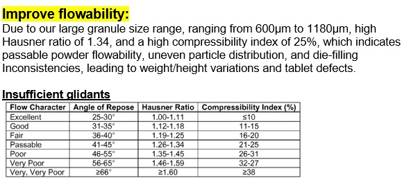
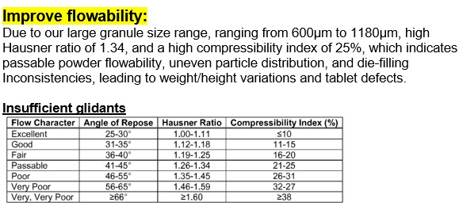

Domain Understanding
Our team begins by sharing domain knowledge from Big Data & Analytics and Pharmaceutical Science to build a shared understanding of the background, manufacturing process, and dataset. This includes discussing pharmaceutical requirements like uniformity of weight and key data concepts such as data quality checks, visualisation, and storytelling to align the team before analysis begins.
 
